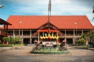
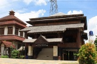

Wisata Jakarta
Deskripsi Taman Mini Indonesia
Taman ini merupakan rangkuman kebudayaan bangsa Indonesia, yang mencakup berbagai aspek kehidupan sehari-hari masyarakat 33 provinsi Indonesia (pada tahun 1975) yang ditampilkan dalam anjungan daerah berarsitektur tradisional, serta menampilkan aneka busana, tarian dan tradisi daerah.
Koleksi Taman Mini Indonesia
Di TMII, gambaran tersebut diwujudkan melalui Anjungan Daerah, yang mewakili suku-suku bangsa yang berada di 33 Provinsi Indonesia. Anjungan provinsi ini dibangun di sekitar danau dengan miniatur Kepulauan Indonesia, secara tematik dibagi atas enam zona; Jawa, Sumatera, Kalimantan, Sulawesi, Bali dan Nusa Tenggara, Maluku dan Papua. Tiap anjungan menampilkan bangunan khas setempat.
Lokasi Taman Mini Indonesia
Rp 10.000
Mobil
Rp 10.000
Motor
Rp 6.000
Sepeda
Rp 1.000
07.00 - 22.00 WIB
Lokasi Toilet
Lokasi Tempat Ibadah

Nusa Tenggara Barat
Provinsi Nusa Tenggara barat (NTB) adalah provinsi yang terdiri dari dua pulau utama, yaitu Pulau Lombok dan Pulau Sumbawa. Ibukota provinsi ini adalah kota Mataram yang berada di pulau Lombok. Penduduk asli NTB terdiri dari tiga suku asli utama, yakni sasak, Mbojo dan Sumbawa. Suku bangsa Sasak berasal dari pulau Lombok, sedangkan dua lainnya, Mbojo dan Sumbawa merupakan etnik terbesar di pulau Sumbawa.Suku bangsa Sumbawa disebut juga Tau Samawa (Orang Sumbawa), sedangkan suku bangsa Mbojo adalah penduduk asli Bima dan Dompu.
Secara berkala anjungan NTB memamerkan upacara adat, seperti khitanan dan pernikahan.Pementasan kesenian berupa tari-tarian daerah dan aneka tarian nusantaram diselenggarakan dua atau tiga kali dalam satu bulan pada hari Minngu, serta pada hari libu nasional.Setiap minggu dan libur, kanting anjungan juga menyediakan makanan tradisional yang dapat dinikmati pengunjung.
Jawa Tengah

Propinsi Jawa Tengah, dengan Semarang sebagai Ibukotanya dikenal sebagai 'Daerah Seribu Candi', karena banyaknya candi yang terdapat disana, seperti Candi Borobudur, Prambanan, Mendut dan lain-lain. Hal tersebut membuktikan bahwa dahulu agama Hidu dan Budha pernah berkembang di daerah ini, walau sejarah pun mencatatbahwa dari daerah ini pula awal kerajaan Islam di Jawa, setelah jatuhnya kerajaan Hindu Majapahit di Jawa Timur.Masjid Demak, yang konon dibuat oleh para wali, merupakan bukti sejarah yang sampai sekrang ini masih ada dan terpelihara.Dengan demikian, sangat wajar apabila budaya daerah ini sangat beragam. Anjungan Jawa Tengah diisi oleh beberapa bangunan, dimana bangunan induknya adalah sebuah pendopo agung, tiruan dari pendopo agung 'Istana Mangkunegaran' Surakarta, yang diakui sebagai salah satu pusat kebudayaan Jawa. Penampilan bangunan berbentuk 'Joglo Trajumas' itu berkesan anggun.
Propinsi Jawa Tengah memiliki beberapa objek wisata yang menarik seperti Pegunungan Dieng, Tawangmangu, kompleks Keraton Mangunegaran dan lain-lain. Keseniannya antara lain Calung banyumasan, Dalang Jemblung, Kuda Lumping dan lain-lain, dimana semuanya dapat disaksikan di anjungan pada hari Minggu atau libur.
Jawa Timur
Propinsi Jawa Timur beribukota Surabaya, yang dikenal sebagai kota Pahlawan. Sejarah mencatat bahwa daerah ini pernah menjadi pusat kerajaan besar, Majapahit dengan tokoh negarawan Gajah Mada. Bekas-bekas kebesaran itu kini masih ada, berupa Candid an Reruntuhannya yang tersebar di beberapa tempat. Kono asal-muasal masyarakat Tengger, yang tinggal di pegunungan Bromo adalah keturunan orang-orang Majapahit yang terpaksa menyingkir karena masuknya agama Islam. Pegunungan Bromo dengan masyarakat Tenggernya kini menjadi tempat wisata yang menarik, disamping objek wisata lainnya seperti Tretes, batu, Kebun Binatang, pantai Pasir Putih di Situbondo, dan panggung terbuka Candra Wilwawtika, tempat dipentaskannya berbagai kesenian Jawa Timur.
Bangunan lain yang terdapat disana, memperagakan bentuk rumah yang berasal dari Madura. Diwakili oleh Kabupaten Sumenep, Pamekasan, bangkalan dan rumah Situbondo, yang merupakan model Jawa-Madura.Diperagakan pula langgar (tempat sembahyang), pir (alat transportasi dari bangkalan), perahu-perahu nelayan dan pagupon (tempat memelihara burung Merpati) dalam penampilan yang khas. Di tempat-tempat tertentu ditanam pohon-poho yang ditemukan di jawa Timur, antara lain: Maja, Srikaya, Kelapa gading, Sawo Kecik, Mangga, Kayu Jati dan lain-lain.
Jawa Barat
Anjungan Jawa Barat di TMII dibangun berdasarkan model kasepuhan Keraton Cirebon.Pemilihan model itu beralasan, sebabdahulu Cirebon merupakan daerah pengembangan agama Islam yang pertama di Jawa Barat, dan hingga kini sebagian besar penduduknya merupakan pemeluk agama Islam. Sesuai dengan bangunan aslinya, bangunan induk anjungan ini dibagi atas beberapa ruangan yang kini dimanfaatkan sebagai sarana untuk memperkenalkan berbagai aspek budaya.
Sumatera Barat
Dalam memperkenalkan wajah 'Ranah Minang', propinsi Sumatera Barat membangun anjungan di TMII dengan model rumah Gadang dan sebuah balairung sebagai bangunan induknya. Rumah ini aslinya dihuni oleh sebuah keluarga besar yang dikepalai oleh seorang Ninik Mamak yang bergelah Datuk, sedangkan balairung aslinya merupakan tempat bermusyawarah para Ninik Mamak. Namun di anjungan ini, kedua bangunan tersebut digunakan memamerkan aspek budaya dan aktifitas kesenian sesuai dengan fungsinya sebagai Show Window daerah Sumatera Barat. Rumah Gadang yang terdapat di anjungan ini adalah model rumah Gadang Sembilan Ruang Empat Deret. Bangunan itu aslinya berdiri diatas tiang, namun di TMII kolong bawahnya telah dirubah menjadi ruang perkantoran, tempat aktifitas pengelolaan anjungan ini berlangsung, sejak pukul 08.00 wib s/d 18.00 wib setiap hari. Ruang atas bangunan dipakai untuk memperkenalkan berbagai aspek tradisional, antara lain: busana adat, pelaminan pengantin Padang Pariaman, kain Songket Silungkang, dan seperangkat musik Talempong.
Sumatera Utara

Anjungan Daerah Istimewa Yogyakarta di TMII menampilkan model 'Rumah Adat Mataram' sebagai bangunan induknya. Pada dasarnya, rumah adat ini dibagi menjadi tiga bagian dan diantaranya adalah bagian depan yang disebut sebagai Pendopo Agung. Difungsikan sebagai tempat menerima tamu dan melangsungkan pementasan kesenian. Pendopo demikian ini di Keraton Yogyakarta disebut dengan nama 'Bangsal Kencono'. Di anjungan Yogyakarta, pendopo agung ini berupa bangunan tanpa dinding dengan 4 Soko Guru (tiang pokok) yang didukung oleh tiang-tiang pembantu di seputarnya.Semua tiang tersebut terbuat dari kayu berukir, dengan corak ragam hias yang berasal dari alirang Hindu, Budha dan Islam. Seperangkat Gamelan Jawa yang digelar, yaitu Kyai Shanti Mulyo (Laras Pelog), dan Kyai Rajah (Laras Slendro) nampak menghiasi pendopo agung yang megah.
Daerah Istimewa YogyaKarta
Anjungan Daerah Istimewa Yogyakarta di TMII menampilkan model 'Rumah Adat Mataram' sebagai bangunan induknya. Pada dasarnya, rumah adat ini dibagi menjadi tiga bagian dan diantaranya adalah bagian depan yang disebut sebagai Pendopo Agung. Difungsikan sebagai tempat menerima tamu dan melangsungkan pementasan kesenian. Pendopo demikian ini di Keraton Yogyakarta disebut dengan nama 'Bangsal Kencono'. Di anjungan Yogyakarta, pendopo agung ini berupa bangunan tanpa dinding dengan 4 Soko Guru (tiang pokok) yang didukung oleh tiang-tiang pembantu di seputarnya.Semua tiang tersebut terbuat dari kayu berukir, dengan corak ragam hias yang berasal dari alirang Hindu, Budha dan Islam. Seperangkat Gamelan Jawa yang digelar, yaitu Kyai Shanti Mulyo (Laras Pelog), dan Kyai Rajah (Laras Slendro) nampak menghiasi pendopo agung yang megah.
Kalimantan Barat

Propinsi Daerah Tingkat I Kalimantan Barat beribukota Pontianak yang terletak tepat di garis Khatilistiwa. Penduduk aslinya adalh berbagai suku dayak, yaitu Dayak Embaloh, Iban, Taman, Punan, Kayan, dan Kendayan. Sedang kaum pendatang antara lain, suku Bugis, Melayu dan Cina, yang umumnya menetap di pesisir. Berdasarkan hal inilah, maka khasanah budaya daerah ini memiliki corak yang sangat beragam dan menarik. Anjungan Kalimantan barat yang terdapat di TMII adalah tiruan dari 'Istana Kesultanan Kadaryiah' dan sebuah 'Rumah Bentang' atau 'Rumah Panjang'.
Demikian juga beberapa peralatan seperti : meriam kecil, bendera, paying kuning, tombak dan gamelan nampak di pajang di sekitarnya. Rumah Bentang atau rumah Panjang merupakan model rumah adat suku Dayak pada umumnya.Aslinya, rumah adat ini ditempati oleh puluhan keluarga dengan jumlah orang mencapai ratusan.untiknya, bangunan yang panjang dan besar ini tampak kokoh karena ditopang berpuluh-puluh tiang kayu berlian serta hanya mempunyai satu tangga.Itupun terbuat dari sebatang kayu yang ditoreh untuk membuat jenjang-jenjangnya.Namun yang terlihat di anjungan Kalimantan Barat terlihat dibuatkan lebih dari satu tangga yang diperuntukan kepada pengunjung agar bisa naik ke tingkat atas dengan mudah.Secara keseluruhan, bangunan ini dibagi menjadi dua bagian memanjang, dimana satu sisi merupakan ruangan tertutup berpetak-petak, yang merupakan bilik-bilik keluarga (selasar).Sedangkan bagian lain yang yang beruba ruangan memanjang sepanjang bentang di sebut tajuk datu jungkat yang berfungsi serba guna.
Kalimantan Selatan

Propinsi Kalimantan Selatan beribukota Banjarmasin.Di propinsi ini banyak terdapat hutan dan sungai-sungai besar. Penduduknya sekitar kurang-lebih 2,5 juta jiwa yang terdiri dari suku Banjar dan Bugis di pesisir, selebihnya suku Dayak yang tinggal di pedalaman.Alam Kalimantan kaya hasil bumi, antara lain : batubara, emas, minyak, kaolin, intan, marmer, dan pospat. Hasil buminya antara lain: lada, karet, kopi, cengkeh, kapuk, di samping hasil0hasil pertanian lainnya. Propinsi ini juga mempunyai berbagai tempat wisata yang sangat menarik, seperti kehidupan atas air di sungan Martapura, Kuin maupun Barito. Museum 'Lumbung Mangkurat', pantai Sarang Tiung, Pantai Takisung, gua Kelelawar di gunung Batu Kampung Jaro, dan masih banyak lagi yang lain.
Propinsi Kalimantan Selatan terdiri dari 9 Kabupaten dan 1 kotamadya tersebut membangun anjungannya di TMII dengan maksud memperkenalkan budaya kedaerahannya terutama di bidang kepariwisataan. Bangunan induknya berupa rumah adat banjar, yang disebut 'Rumah Bubungan Tinggi' atau 'Rumah Lambung Mangkurat', yang konon sudah ada sejak abad ke-16, ketika pemerintahan Sultan Suriyansah. Rumah adat Banjar didirikan di atas tiang, lantainya dibuat berjenjang meninggi sampai ke bubungan, untuk kemudian turun kembali.Bagian depan disebut sebagai Palatar, yang dipergunakan untuk tempat berangin-angin.
Kalimantan Timur
Propinsi Kalimantan Timur beribukota Samarinda.Propinsi ini memiliki luas 211.440 km2.Suku Dayak dan suku Kutai merupakan penduduk aslinya.Suku Dayak terdiri dari Dayak Kenyah, bahau, tanjung, benua, modang hidup berkelompok antara 5 sampai 10 keluarga.Kehidupan mereka pada umumnya sudah menetap sejak dahulu.Bukti peninggalan sejarahnya dapat dilihat di bekas perkampungan tua yang sebagian terdapat di beberapa anak sungai sebelah utara Mahakam. Gamabaran mengenai daerah ini dituangkan pada anjungan Kalimantan Timur dengan menampilkan bangunan rumah adat yang bernama Lamin sebagai bangunan induknya. Rumah adat tersebut terbuat dari kayu ulin yang kuat.Keunikan yang menarik adalah tekhnik menyambung bangunan yang tidak menggunakan paku, melainkan menggunakan bor yang kemudian dipasak.Sebagian hanya diikat dengan tali rotan.Lantai rumah cukup tinggi, sehingga membutuhkan tangga pada pintu gerbangnya. Seperti halnya cara hidup yang berkelompok, dahulu rumah lamin dihuni oleh beberapa keluarga.
Namun perkembangan selanjutnya, pada masa sekarang ini rumah tersebut hanya dihuni oleh sebagian kecil masyarakat disana.Rumah lamin pada dasarnya mencerminkan kegotong royongan masyarakat Dayak.Pembangunan rumah ini mengharuskan partisipasi masyarakat yang tinggal di sekitar pembangunan rumah tersebut.
Kalimantan Tengah

Anjungan Kalimantan tengah di TMII menjadikan Betang atau rumah panjang sebagai bangunan induknya. Bangunan dengan pola arsitektur tradisional Kalimantan tengah ini merupakan tiruan rumah adat yang masih ada sampai saat sekarang ini seperti di Desa Tumbang Gagu, Kecamatan Mentaya Hulu, Kabupaten Kota Waringin Timur, yang didirikan tahun 1880 oleh Antang Aklang bersama sanak keluarganya. Betang sendiri merupakan gambaran kerukunan hidup.Betang didirikan dengan alat-alat yang masih sederhana dan dibangun oleh orang-orang yang tidak memiliki ilmu pengetahuan arsitektur modern. Rumah ini juga dihuni secara beramai-ramai, yang secara otomati smembangun perasaan yang sama pada saat senang maupun susah. Khasanah budaya Kalimantan Tengah pun diperkaya oleh beberapa cabang seni tradisional yang sampai kini tetap diupayakan pelestarian dan pengembangannya, missal seni patung, seni relief, seni tari, dan upacara adat.
Lampung
Propinsi Lampung terletak di ujung selatan pulau Sumatera, dan dengan propinsi Jawa Barat dipisahkan oleh Selat Sunda yang dapat dicapai dengan menggunakan ferry jurusan Merak-Bakauheni. Ibukota propinsi Laampung adalah Bandar Lampung.Obyek wisata yang dimiliki daerah ini adalah kawasan sekitar Pulau Krakatau. Kawasan ini menarik karena keunikan alamnya, terlebih bila gunung Krakatau sedang aktif dimana semburan asap dan api dapat terlihat dari laut di sekitarnya. Tempat wisata yang lain adalah Taman Laut Sebuku, Pantai Merak Blantung, Pantai Tegal, dan masih banyak lagi yang lain. Anjungan Lampung di TMII menampilkan dua rumah adat sebagai bangunan induknya.Masing-masing adalah 'Nuwou Balak' dan 'Nuwou Sesat'.Kedua rumah tersebut digunakan untuk memperkenalkan berbagai aspek budaya tradisionalnya.
Bengkulu
Bengkulu, yang menjadi propinsi sekaligus ibukota tersebut memiliki luas wilayah sekitar 19.788,7km2 dengan penduduk sekitar 943.278 jiwa.Penduduk pada umumnya memeluk agama Islam dengan mayoritas mata pencaharian sebagai petani. Bengkulu merupakan daerah yang subur dan kaya, hasil alamnya antara lain: karet kelapa sawit, coklat, rotan dan meranti. Tempat-tempat pariwisana Bengkulu juga tak kalah menarik, sebut saja Benteng Marborough, peninggalan Inggris 3 abad lalu, bekas rumah kediaman Bung Karno dengan Mesjid Jamik yang dirancang oleh Bung Karno, Monumen Parr, Pantai Panjang, danau Dendam tak Sudah dan lain-lain. Bengkulu juga dikenal sebagai tempat tumbuhnya Bungan Rafflesia Arnoldi, sejenis bunga bangkai yang amat besar, yang diketemukan oleh Stamford Raffles, gubernur jendral Belanda yang juga seorang Botanikus.Selain alamnya yang indah, khasanah budaya tradisional Bengkulu juga menarik untuk dikenal.Karena itulah, propinsi Bengkulu membangun anjungannya di TMII agar dapat lebih dikenal oleh khalayak.
Kepulauan Riau
Propinsi Riau dengan ibukotanya Pekan Baru, terletak di pantai timur pulau Sumatera.Wilayahnya meliputi 3214 pulau, yang terletak diantara pulau Sumatera dan Selat malaka, serta laut Cina Selatan. Penduduknya, yang hanya sekitar dua seperempat juta jiwa menempati daerah yang luas dan subur, menghasilkan minyak bumi yang melimpah ruah, tak heran apabila perkembangan daerah ini maju pesat, sebab 'urat nadi' perekonomian cukup tersedia sejak dulu, berupa sungai-sungai besar seperti Kampar, Siak, Rokan, dan Indagiri.
Di TMII, anjungan Riau menempati areal yang cukup luas. Halamannya dihiasi dengan beberapa patung Gajah, harimau, dan Beruang sebagai gambaran penghuni hutannya yang sebagian besarnya belum terjamah. Pada sudut yang lain tampak sebuah kilang minyak, hal ini sekilas menunjukan kepada kita akan masa lalu daerah ini yang memeberi sentuhan pada kebudayaan Riau sekarang. Pada bagian lain, tampak sebuah buku besar dengan tulisan 'Gurindam Duabelas' karya raja Ali Haji, yang memberi gambaran jelas arti Riaudalam perkembangan bahasa dan sastera.
Bangka Belitung
Kepulauan Bangka Belitung sebelumnya merupaka wilayah provinsi Sumatera Selatan, namun kemudian menjadi provinsi ke-31 dengan ibukota Pangkal Pinang berdasarkan UU No. 27 tahun 2000. Provinsi ini memiliki luas wilayah 81.725,14 km2, terbagi menjadi enam kabupaten dan satu kotamadya, yakni kabupaten Bangka barat, kabupaten Bangka tengah, kabupaten Bangka selatan, kabupaten Bangka timur, kabupaten Belitung dan kotamadya pangkal pinang. Wilayahnya terdiri dari du gugus pulau besar, pulau Bangka dan Belitung dengan 254 pulau-pulau kecil di sekitarnya menawarka wisata bahari yang menakjubkan, bahkan keindahan pantainya dinobgatkan sebagai yang terindah di asia tenggara.Selain kekayaan alam bahari, Bangka memiliki tambang timah yang sudah dikenal sejak lama. Menurut sejarahnya, nama Bangka sendiri berasaldari kata 'wangka' yang berarti timah. Penduduk yang tinggal di Bangka belitungpun terdiri dari beragam suku bangsa, diantaranya melayu, jawa, tionghoa, Sunda, batak, Madura dan Bugis.
Sebagian besar penduduknya merupakan pemeluk agam Islam disamping Kristen, Hindu, Budha dan Konghuchu.Penduduk aslinya adalah orang Bangka dan Belitung yang berbahasa melayu.Pada masa colonial, Belanda mendatangkan tenaga buruh kontrak dari Cina untuk dipekerjakan di pertambangan timah.Setelah kontrak selesai, para buruh kontrak menetap dan terjadi perkawinan dengan penduduk setempat.Perkawinan campuran itu menghasilkan Cina peranakan.
Terdapat juga berderet hasil kerajinan tangan di dalam anjungan ini antara lain batusata,.Akar bahar, anyaman rumput resam dan tentu saja aneka ragam kerajinan tangan berbahan dasar timah. Yang terunikdari sini adalah batu satam, sejenis batu mineral berwarna hitam dengan urat-uratnya yah khas sebagai hasil proses alam yang mengandung kadar timah yang tinggi. Kata satam berasal dari cina yang artinya pasir 'tam', atau empedu. Selain untuk perhiasa, batu satam dip[ercaya memiliki khasiat sebagai obat dan mampu melindungi si pemakainya dari gangguan gaib.
Sulawesi Selatan
Propinsi Sulawesi selatan terletak di jazirah barat daya pulau Sulawesi.Berbatasan dengan propinsi Sulawesi tengah di bagian utara. , teluk Bone di sebelah timur dan laut flores di sebelah selatan serta selat makasar di sebelah barat. Propinsi yang terdiri dari 21 kabupaten dan 2 kotamadya, dengan luas sekitar 82.768 km2 ini didiami oleh 4 suku bangsa, yaitu Bugis, Makasar, Mandar dan Toraja. Suku Bugis, Makasar dan Mandar memiliki corak budaya yang hamper sama, sehingga sering disebut sebagai orang bugis-makasar saja. Mereka umumnya tinggal di daerah pesisir dan terkenal sebagai pelaut yang ulung.Sebaliknya, suku Toraja yang tinggal di pedalaman memiliki kebudayaan yang sangat berbeda.
Rumah adat di anjungan ini memiliki fungsi sebagai tempat memamerkan berbagai aspek budaya daerah seperti peragaan perburuan dan hasil hutan, anyaman-anyaman serta peragaan busana dari masing-masing suku.Di bagian lain dapat terlihan berbagai jenis perahu tradisional lambing ketangguhan para pelaut ulung bugis-makassar. Rumah adat Toraja atau Tongkonan yang ditampilkan adalah rumah pemilik penguasa adat yang diletakan diatas tiga pasang kepala kerbau (kabonga) merupakan symbol kebangsawanan pemilik rumah. Sejumlah lumbung padi (alang) berukir yang berderet di depan rumah juga merupakan ukuran status kekayaan dari sang pemilik rumah.Rumah adat Toraja umumnya menghadap ke utara, atapnya unik berbentuk perahu wangka (bugis), dan biasanya memiliki ukiran dengan arti tertentu.Warnah ukirannya sangat khas, yaitu merah, putih dan kuning serta hitam. Tanduk kerbau di depan rumah menandakan berapa banyak pemilik rumah melangsungkan pemakaman adat. Bagi orang toraja, kerbau memuiliki arti yang sangat mendalam, karena dianggap memiliki magis, terutama tedong bonga (kerbau belang).
Kerbau yang dianggap sebagai kendaraan roh di akhirat, oleh karena itu, fungsinya sebagai kurban di upacara pemakaman sangat penting. 'laki padada'., tokoh legendaris yang menurut sejarah merupakan turunan raja-raja Sulawesi selatan juga digambarkan mengendarai seekor kerbau putih sebagai kendaraan mengelilingi alam untuk mencari kedamaian.
Sulawesi Tengah
Propinsi Sulawesi Tengah beribukota Palu.Wilayahnya seluas 68.033 km2.Dihuni oleh beberapa suku seperti suku kaili, pamona, mori, bungku, saluan, banggai, balantak, buol, toil-toli. Karena itu, propinsi ini membangun 3 buah rumah adat sebagai bangunan induknya sera sebuah lumbung padi di anjungan Sulawesi Tengah TMII.Bangunan pertama adalah 'Souraja', yang merupakan model rumah ada bangsawan Kaili yang banyak berdiam di pantai.Rumah diatas tiang ini mempunyai beberapa ruangan. Ruangan depan, yang dinamakan lonta karavana sesuai dengan aslinya digunakan sebagai ruang tamu. Ruang tengah (lonta tatangana), aslinya berfusngsi sebagai ruangan keluarga, namun di anjungan berfungsi sebagai tempat peragaan pengantin bangsawan kaili.Sedang ruang dalamnya yang dinamakan lonta riarana, ditata sesuai fungsi aslinya, yaitu kamar tidur pengantin, kamar anak gadis dan kamar keluarga.Dengan sebuah jembatan, rumah souraja ini masih dihubungkan dengan avu (dapur) yang terletak di belakangnya.
Sulawesi Barat
Provinsi Sulawesi Barat merupakan provinsi pengembangan dari Sulawesi Selatan yang dibentuk berdasarkan UU No. 26 pada 5 oktober 2004.Propinsi ini terdiri atas kabupaten Polewali mandar, Mamasa, majene, Mamuju dan Mamuju utara. Ibukota provinsi ini adalah mamuju dengan luas wilayah sekitar 11.057,81 km2 berada di pesisir pantai Sulawesi barat dan letaknya sangat strategis karena merupakan pintu gerbang segitiga yang menghubungkan provinsi Sulawesi Selatan-Sulawesi Tengah-Kalimantan Timur, sehingga daerah ini sebelum pemekaran sering disebut sebagai kawasan segitiga emas. Sulawesi barat memiliki daya tarik wisata alam yang fantastis dengan panorama pegunungan, keunikan budaya dan peninggalan sejarah yang unik.Selain kakao, daerah ini juga merupakan penghasil kopi, baik robusta maupun arabika, kelapa dan cengkeh. Di sector pertambangan terdapat kandungan emas, batubara, dan minyak bumi.
Nusa Tenggara Timur

Provinsi NTT memiliki potensi alam yang mengagumkan untuk dijadikan obyek wisata andalan. Beberapa obyek wisata yang sudah dikenal secara luas adalah Taman Nasional Komodo, Taman Wisata Kelimutu, Goa Batu Mata, Pantai Lasiana, Hutan Camplong, Liang Bua Teras, Museum Maumere , Pantai Nembrala Pulau Rote, Wisata Budaya di Pulau Sumba. Selain memiliki obyek wisata yang menarik, NTT pun mempunyai kekayaan makanan khas seperti jagong bose, tumis bunga papaya dan daging sei.
Terdapat dua bangunan mengapit rumah adat Ende. Di sebelah barat berupa rumah adat Rote ( umatua ) dari Kabupaten Rote Ndao, di dalamnya dipamerkan pakaian adat dan sasando yang sudah lebih modern; sedangkan bangunan di sebelah timur berupa rumah adat Alor, di dalamnya dipamerkanpakaian upacara adat suku raja dan beraneka macam selendang.
Terdapat juga alat musik tambur, terbuat dari potongan kayu yang disusun dan diikat dengan rotan, di bagian atasnya menggunakan kulit kerbau lengkap dengan alat pemukul dari batang kayu.
Papua
Provinsi Papua terletak di wilayah paling timur dan paling luas wilayahnya dari seluruh provinsi di Indonesia. Provinsi ini sebelumnya dikenal dengan nama Irian barat sejak tahun 1969 hingga 1973, kemudian namanya diganti menjadi Irian Jaya hingga tahun 2002. Nama provinsi ini diganti menjadi Papua sesuai dengan UU No 21/2001 Otonomi Khusus Oaoua.Selanjutnya provinsi papua dimekarkan menjadi dua provinsi, yaitu provinsi Papuayang beribukota jayapura dan provinsi Papua barat yang beribukota Manokwari.
Kebudayaan penduduk Papua amat beraneka ragam, baik suku bangsa (kelompok etnik), bahasa, adat istiadat dan tata kehidupannya.Budaya penduduk yang beraneka ragam itu ditandai oleh jumlah bahasa loka yang banyaknya kurang lebih 250 macam sesuai dengan kelompok suku bangsa yang berada di daerah ini. Bahasa di Papua dapat digolongkan kedalam bahasa Melanesia dan diklasifikasikan dalam 31 kelompok bahasa, yaitu : Tobati, Kuimen Sewan, Kauwerawet, Pauwi, Ambai, Turu, Wondama, Roon, Hatam, Arfak, Karon, Kapaur, Waosiran, mimika, Kapauku, Moni, Ingkipilu, Pasecehem, Teliformin, Awin, Mandobo, Auyu, Sohur, Boazi, Klader, Komoron, Jap, Marind-Anim, Jenan dan Serki.
Museum Transportasi
Museum ini menampilkan berbagai moda transportasi yang mengandung nilai sejarah dan perannya dalam perjuangan bangsa. Keberadaan museum ini juga dimaksudkan untuk memberikan informasi sekaligus sebagai tempat rekreasi yang edukatif. Pemran diselenggarakan di dalam dan di luar ruangan. Pameran di dalam ruang dibagi menjadi beberapa tempat yang seolah-olah merupakan bangunan tersendiri yang disebut dengan modul, terdiri atas modul pusat, modul darat, modul laut dan modul udara, baik dengan benda asli, tiruan, miniatur, foto, maupun diorama.
Harga Tiket Masuk
Rp 5.000
Petunjuk Arah
Museum Listrik dan Energi Baru
Museum Listrik dan Energi Baru (MLEB) Merupakan satu-satunya museum ilmu pengetahuan dan teknologi (Science museum) di Indonesia yang memperagakan koleksi tentang Ketenagalistrikan dan Energi Baru Terbarukan. Berbagai koleksi peragaan disajikan menggunakan teknologi modern yang interaktif sehingga pengunjung dapat mempraktekkan sendiri peraganya seperti peragaan seri paralel, peragaan menghasilkan arus listrik dari buah-buahan, pensil, koin dan dari magnet.
Keragaman informasi dan koleksi yang disediakan, memungkinkan MLEB untuk dikunjungi dan dimanfaatkan oleh berbagai lapisan masyarakat mulai dari rombongan pelajar, mahasiswa, keluarga, hingga wisatawan domestik dan mancanegara. Selain itu MLEB memiliki ruangan sejuk dengan arsitektur unik dan halaman asri yang nyaman untuk melepas lelah pengunjung rombongan maupun keluarga.
Harga Tiket Masuk
Rp 10.000
Petunjuk Arah
Museum Olahraga
Museum olah raga diresmikan oleh Presiden Soeharto pada tanggal 20 April 1989, bertepatan dengan HUT TMII ke-14. Berdiri di atas tanah seluas 1,5 ha dengan luas bangunan 3.000 m2.
Lobby lantai dasar menampilkan motto yang mencerminkan nilai hakiki olahraga, antara lain sportivitas dan perjuangan. Adapun pameran meliputi sejarah olahraga antar bangsa, menampilkan perjuangan bangsa Indonesia dalam mengikuti kegiatan olahraga di dunia internasional, seperti Olimpiade Helsinki dan Asian Games, tokoh olahraga, menampilkan para pejuang olahraga yang telah mengharumkan nama bangsa di bidang olahraga dan para tokoh yang berkecimpung di bidang olahraga, sejarah olahraga nasional, menampilkan sejarah berdirinya stadion pertama di Indonesia dan pelaksanaan PON I tahun 1948 di Sala, serta keberhasilan tim Everest, menampilkan perjuangan Tim Kopassus dalam menaklukkan Gunung Himalaya dan tim Dewaruci yang menampilkan maket kapal Dewaruci.
Harga Tiket Masuk
Rp 2.000
Petunjuk Arah
Museum Prangko
Meseum perangko adalah wahana untuk menyelenggarakan pameran perangko secara tetap yang didirikan atas gagasan Ibu Tien Soeharto. Gagasan itu dicetuskan ketika Ibu Tien mengunjungi pameran perangko yang diadakan oleh PT. Pos Indonesia (Persero) pada acara Jambore Pramuka Asia Pasifik ke VI di Cibubur pada bulan Juni tahun 1981. Kemudian, dibangun museum perangko dengan bentuk bangunan bergaya Bali di atas lahan seluas 9.590 m2 dan diresmikan oleh Presiden Soeharto pada tanggal 29 September 1983.
Museum ini memamerkan koleksi perangko asal Indonesia dan luar negeri. Kompleks bangunan gedung dihiasi sejumlah ukiran dan patung gaya Bali dan Jawa, dikelilingi pagar tembok dengan dua pintu gerbang yang mengambil model dasar candi Bentar, selain berfungsi sebagai pintu, pagar ini juga menjadi pemisah antara halaman luar dan halaman kompleks bangunan. Di halaman depan terdapat bola dunia dengan burung merpati membawa surat di paruhnya, lambing tugas PT Pos Indonesia (Persero) telah menjangkau seluruh dunia. Di depan pintu masuk gedung, berdiri patung Hanoman, yang dalam pewayangan dikenal sebagai Dhuta Dharma pembawa berita, misinya sama dengan PT Pos Indonesia (Persero).
Harga Tiket Masuk
Rp 5.000
Petunjuk Arah
Museum Penerangan
Museum penerangan adalah salah satu media yang mengumpulkan, mempelajari, menggelar dan merawat objek sejarah penerangan dan komunikasi, sekaligus merupakan media komunikasi masa keenam setelah tatap muka, radio, TV, film dan pers. Museum penerangan menempati lahan seluas 10.850 m2 dengan luas bangunan 3.980 m2. Didirikan atas prakarsa Ibu Tien Soeharto dan diresmikan pada tanggal 20 April 1993 oleh Presiden Soeharto. Bangunan museum berbentuk bintang bersudut lima yang melambangkan Pancasila dan lima unsur penerangan. Di halaman depan terdapat tugu yang menyangga lambing penerangan 'Api nan Tak Kunjung Padam', dikelilingi oleh lima patung juru penerang serta air mancur, pertemuan air dari atas tugu dengan air yang memancar dari bawah melambangkan hubungan timbal balik antara pemerintah, masyarakat dan media masa. Bangunan terdiri dari tiga lantai, melambangkan kehidupan masa lalu, masa kini dan masa mendatang. Puncak gedung berbentuk silinder, mencitrakan kenthongan sebagai unsur penerangan tradisional, menyangga menara antenna sebagai unsur modern.
Pameran ditata di luar dan di dalam gedung, yang secara keseluruhan menggambarkan sejarah penerangan sejak pergerakan nasional hingga masa Indonesia modern. Koleksi di luar gedung atara lain empat mobil siaran luar Televisi Republik Indonesia (TVRI), mobil panggung penerangan, mobil unit Sinerama PFN, mobil siaran luar Radio Republik Indonesia (RRI), serta mobil siaran luar TVRI pertama untuk meliput Asian Games IV di Jakarta tahun 1962, yang tercatat sebagai awal berdirinya TVRI dan mesin cetak tiga zaman.
Harga Tiket Masuk
Gratis
Petunjuk Arah
Museum Minyak dan Gas
Museum Minyak dan Gas Bumi adalah museum yang dibangun untuk menandai peringatan 100 tahun industry minyak dan gas bumi Indonesia. Gagasan pendiriannya lahir ketika pembukaan upacara Konvensi Tahunan 'Indonesia Petroleum Association' ke-14 pada tanggal 8 Oktober 1985. pembangunan fisiknya dilakukan pada tahun 1987. Akhirnya, berkat usaha dan sumbangan masyarakat perminyakan Indonesia demi melestarikan dan mewariskan nilai-nilai juang kepada generasi penerus untuk meningkatkan ilmu dan teknologi, museum ini resmi dibuka pada tanggal 20 April 1989 oleh Presiden Soeharto.
Gedung utama berbentuk anjungan lepas pantai yang berada di atas danau buatan seluas 11.000 m2, menjadi ciri khas pencarian minyak dan gas bumi, disebut anjungan Eksplorasi. Dua bangunan pendukung berbentuk bundar (gilig), menyerupai tangki penyimpanan minyak yang mengapit gedung utama, disebut anjungan pengolahan. Ruang pameran terdapat di gedung utama dan anjungan eksplorasi guna mengutarakan seluk-beluk mengenai minyak dan gas bumi. Pameran di gedung utama mengenai sejarah gedung perminyakan. Di dalam ruangan ini, terdapat teater minyak yang memutar film pendek dan multislide mengenai asal mula serta hasil pengolahan minyak dan gas bumi di Indonesia. Film-film yang ditayangkan memberikan gambaran yang mudah bagi pengunjung untuk memahami industry minyak dan gas bumi. Selain itu, terdapat ruang untuk pameran berbagai bendadan bahan mengenai minyak dan gas bumi yang ada di sekitar kita.
Harga Tiket Masuk
Rp 5.000
Petunjuk Arah
Museum peragaan IPTEK
Pusat Peragaan Ilmu Pengetahuan dan Teknologi ( Science Center) atau disingkat PP-IPTEK Adalah sarana pembelajaran luar sekolah untuk menumbuh kembangkan budaya ilmu pengetahuan dan teknologi secara mudah, menghibur, berkesan dan kreatif. Gagasan pendiriannya berawal dari Mentri Riset dan Teknologi Republik Indonesia, Prof.Dr.B.J.Habibie, yang berkeinginan bagaimana mencerdaskan masyarakat Indonesia melalui ilmu pengetahuan dan teknologi. Dibangunlah PP-IPTEK digedung terminal B Skylift-TMII di atas lahan seluas 1000 m2 dan diresmikan oleh Presiden Soeharto pada tanggal 20 April 1991.
Pusat peragaan ini dibangun dengan maksud menyadarkan masyarakat mengenai perkembangan ilmu pengetahuan dan teknologi dunia secara sangat cepat.Arah perkembangan ini harus disadari agar kita dapat mengikutinya untuk kemudian maju bersama perkembangan tersebut.peragaan di PP-IPTEK dibuat sangat menyenangkan dan menghibur, melalui berbagai program dan peragaan interaktif yang dapat disentuh dan dimainkan. Melalui interaksi ini, diharapkan mampu mendorong tumbuhnya pemikiran tentang apa, mengapa dan bagaimana iptek digali dan dimanfaatkan bagi umat manusia agar lebih nyaman dan sejahtera.
Harga Tiket Masuk
Rp 16.500
Petunjuk Arah
Museum Bayt Al-Quran dan Istiqlal
Bayt Al-Qur'an dan museum Istiqlal (BQ dan MI) merupakan kesatuan dari dua lembaga yang berbeda.bayt Al-Qur'an yang erarti rumah Al-Qur'an dengan materi pokok berupa peragaan yang berkaitan dengan Al-Qur'an, sedangkan Museum
Istiqlal menampilkan hasil-hasil kebudayaan Islam Indonesia. Karya-karya unggulan para ulama dan intelektual muslim Nusantara sejak abad ke-17 sampai ke-20 yang bernilai historis dapat disaksikan disini. Warisan budaya
berupa musyaf, manuskrip Al-Qur'an, arsitektur, seni rupa Islami yang memiliki keindahan seni juga tersimpan. Bayt Al-Qur'an dan museum Istiqlal, memang menghadirkan pesona untuk direnungkan. Bangunan ini memiliki 4 lantai
dengan lingkungan yang jauh dari polusi. Selain itu, tempat ini juga memiliki fasilitas ruangan yang lengkap seperti ruang serba guna (main hall), auditorium, audio visual, ruang kelas, pameran, balkon, dan lain-lain. Semua
itu dapat digunakan untuk mengadakan kegiatan seperti seminar, pertunjukan, pameran, perlombaan, forum ilmiah, syukuran, dan lain-lain.
Harga Tiket Masuk
Gratis
Petunjuk Arah
Museum Keprajuritan Indonesia
Arsitekturnya berbentuk benteng persegi lima di atas tanah seluas 4,5Ha dengan luas bangunan 5.500,7 meter persegi. Di dalam bangunan tersebut menggambarkan jiwa dan semangat keprajuritan Bangsa Indonesia yang merupakan dinamika penggerak dan perjuangan mengusir penjajah dalam upaya menegakkan martabat dan kedaulatan wilayah tanah air.
Makna bangunan tersebut melambangkan pertahanan bangsa Indonesia serta berfungsi sebagai alat menangkal dari segala bentuk dan hakekat ancaman. Setiap benteng terdapat lima bastion atau menara pengawas yang melambangkan pentingnya kewaspadaan terhadap ancaman, gangguan, hambatan, dan tantangan terhadap kedaulatan Indonesia.
Di halaman depan terdapat danau buatan dilengkapi dermaga mini yang melambangkan tanah air Indonesia terdiri dari berbagai pulau dan lautan serta kesibukan kemaritiman bangsa Indonesia dengan maksud penyajiannya menggambarkan nilai bahari yang dilengkapi dua kapal tradisional Phinisi (Bugis) dan Banten (Jawa Barat), keduanya melambangkan kekuatan armada maritim bangsa Indonesia di kawasan Barat dan Timur.
Harga Tiket Masuk
Rp 2.500
Petunjuk Arah
Museum Pusaka
Museum pusaka berada di jalur selatan antara Museum Keprajuritan Indonesia dan Museum Serangga, berupa bangunan khas karena di atas atapnya terdapat bentuk Keris yang menjulang. Luas bangunannya 1.535 m2.
Museum memiliki beberapa ruang sebagai sarana dan pendukung bagi sebuah museum, yakni ruang pameran, ruang informasi, ruang pengelola, ruang sarasehan, ruang perpustakaan, ruang konservasi, ruang preservasi, ruang bursa dan ruang cinderamata. Selain memeragakan benda-benda koleksi yang berupa senjata dari seluruh Nusantara, ruang pamer juga menginformasikan berbagai hal mengenai pusaka, ragam hias bilahpusaka, berbagai pusaka khas daerah, pusaka dari zaman ke zaman, dan pusaka hasil temuan. Jenis-jenis kayu untuk membuat pusaka serta ruang besalen (tempat kerja empu pembuat keris) dan peralatannya menlengkapi pameran.
Harga Tiket Masuk
Rp 10.000
Petunjuk Arah
Masjid Pangeran Diponegoro

Masjid Pangeran Diponogoro adalah rumah ibadah umat islam yang dapat digunakan oleh pengunjung maupun masyarakat sekitar untuk menjalankan ibadah salat dan kegiatan lain seperti perayaan hari besar, ceramah, kajian agama, dan belajar al-qur'an. Masjid ini berdiri di atas lahan 2.850 m2 dengan luas bangunan 760 m2 dan terdiri dari dua lantai. Lantai satu untuk para jamaah, tempat wudhu, kamar mandi, ruang tunggu, perpustakaan, gudang dan dapur ; sedangkan lantai dua tempat imam, khatib, mihrap, serta menara berbentuk kubah berketinggian 26 meter untuk mengumandangkan adzan.
Wihara Arya Dwipa Arama
Bentuk bangunan rumah ibadah Budha ini mengambil pola stupa candi Borobudur.Stupa merupakan simbol bangunan tempat-tempat ibadah bagi umat Budha. Dengan lampang Cakra, Prapta, Patina Suta, Umat Budha akan selalu menyadari bahwa kehidupan manusia berputar seperti sebuah roda. Ceiling ruang ibadah berbentuk setengah lingkaran berwarna kuning emas agar tercipta suasana seperti di dalam nirwana.Patung Budha ditempatkan di sebelah barat.Gedung ibadah dikelilingi kolam air. Selain penting bagi umat Budha, keberadaan kolam air dari segi a
Gereja Khatolik Santa Catharina
Gereja Santa Chatarina adalah rumah tempat ibadah umat Katholik Roma. Letaknya bersampingan dengan Masjid Pangeran Diponogoro dan Gereja Kristen Haleluya, Gereja Santa Catharina dibangun tahun 1973 dan diresmikan tahun 1975 dengan luas bangunan 1.030 m2 di atas lahan seluas 2.860 m2. Bentuk bangunan gereja ini merupakan tiruan gereja katholik pertama di Indonesia, yaitu Gereja Santa Catharina di Surabaya.
Secara keseluruhan rumah ibadah ini terdiri dua bangunan, yakni bangunan utama dan aula. Bangunan utama untuk ruang jemaat dan ruang pengampunan dosa, di depannya terdapat menara lengkap dengan lonceng gereja dan puncaknya bersalib; sedang aula sekaligus menjadi ruang perpustakaan, kantor, ruang pastor, dan toilet. Jika sedang ada misa/ruang perpustakaan digunakan untuk Sekolah MInggu bagi anak-anak di bawah umur 10 tahun.
Klenteng Kong Miao
Kelenteng Kong Miao adalah rumah ibadah umat agaman khonghucu. Kelenteng terletak berdampingan dengan deretan rumah ibadah lainnya yang sudah ada di TMII, yakni: Masjid Pangeran Diponogoro, Gereja Katholik Santa Chatarina, Gereja Kristen Protestan Haleluya, Pura Hindu Darma,Wihara Arya Dwipa Arama, dan Sasana Adirasa mencerminkan keragaman dan kerukunan umat beragama di Indonesia.
Kelenteng Kong Miao dilengkapi ornamen pendukung antara lain: Xiang Lu (Hio Lo) atau tempat pembakaran hio, Pintu Gerbang sepasang Singa, Naga, Kilin, Patung 12 Shio, dan Kura-kura Kepala Naga terdapat di halaman.
Pura Penataran Agung Kertabhumi
Pura Hindu Dharma Penataran Agung Kertabhumi adalah tempat peribadatan umat Hindu.Pura ini terletak di Anjungan Daerah Lampung, diapit oleh Gereja Kristen Protestan Haleluya dan Wihara Budha.Arsitektur pura ini mengambil model pura-pura Bali sedang bangunannya didasari oleh filsafat astha kosala kosali.
Bengunan utama terdiri atas pintu gerbang utama Candi Bentar, Balai Gong dan Kul-Kul, Padu Rasa, dan Atlar tempat pemujaan (pad masana). Masing-masing bangunan memiliki fungsi terdiri : gerbang utama sebagai pintu masuk pada saat upacara besar (yadnya), balai kul-kul untuk tempat kentongan, dan balai gong untuk pertunjukan kesenian.
Gereja Kristen Protestan Haleluya
Gereja Kristen Protestan Haleluya terletak di antara bangunan Gereja Katholik Santa Chatarina dan Pura Hindu Dharma serta berhadapan dengan anjungan DKI.Gereja ini dibangun tahun 1973 dan diresmikan tahun 1975.Bangunan utama meliputi ruang pastori, ruang ganti, ruang sound, dan ruang paling besar untuk jemaat. Disamping kanan depan, menyatu dengan bangunan gereja, terdapat menara setinggi 20 m2 yang pada puncaknya berornamen ayam jago, melambangkan kisah dari nats kitab injil, bahwa sebelum Yesus di salibkan akan terjadi penyangkalan Petrus salah seorang murid Yesus sebelum ayam berkokok ( menjelang fajar ) sebanyak tiga kali. Dimenara ini terdapat lonceng.
Sebagaimana halnya gereja di luar TMII, selain untuk kebaktian, Gereja Haleluya juga digunakan untuk pemberkatan pernikahan. Kegiatan lain yang bersifat keagamaan pun dilaksanakan disini, antara lain perayaan Paskah, Natal, dan kegiatan retret. Hari Minggu digunakan untuk ibadat jemaat GPIB, sedang hari sabtu oleh Jemaat Advent.
Sasono Adiroso Pangeran Sambernyowo
Sasana adirasa merupakan tempat ibadah kaum penghayat aliran kepercayaan dan kebatinan . Pangeran samber nyawa adalah tokoh bangsawan (priyayi) dari surakarta yang terkenal sangat sakti dan pandai mengatur siasat perang dan tidak mau bekerjasama dengan VOC .
Terletak di Taman Mini Indonesia Indah, Jakarta. Merupakan tempat bagi semua penganut kepercayaan dan agama untuk melakukan sarasehan, tukar pikiran, dan saling menghargai dalam hal menyangkut Ketuhanan Yang Maha Esa. Sasono artinya tempat, sedangkan adiroso artinya rasa sejati. Gedung ini juga tempat menyimpan buku-buku dan karya tulis yang berisi pelajaran budi pekerti kemanusiaan sebagai pengejawantahan Pancasila. Gedung Sasono Adiroso terdiri atas dua bangunan utama, yakni pendopo dan Gedung Pasucen. Pendopo untuk sarasehan, sedangkan Pasucen untuk menyucikan diri di hadapan Tuhan Yang Maha Esa. Pendopo besar yang beratap susun tiga mencerminkan tiga tingkatan Ilmu Ketuhanan, yaitu Ilmu Kanuragan, Ilmu Sangkan Paraning Dumadi, dan Ilmu Kasampurnaning Dumadi.
Istana Anak-anak

Istana anak-anak Indonesia (IAAI) Adalah bangunan berbentuk istana mirip dalam sebuah dongeng Cinderella.Istana ini dapat menjadi tempat belajar dan bermain bagi anak-anak.Bangunan utama istana dinamai Graha Widya Tama, terdiri atas empat lantai dengan ruang terbuka di lantai dua.Bangunan ini memiliki dua sayap dan menara menjulang tinggi ke angkasa, lambing kebersamaan anak laki-laki dan anak perempuan dalam menggapai prestasi setinggi langit. Prasasti peresmian gedung ini di tanda tangani oleh Presiden Soeharto tanggal 20 April 1986. Di dalam ruang ini disajikan pameran wayang dan peragaan aneka permainan tradisional anak.
Disini tersedia program yang diselenggarakan secara tetap maupun berkala untuk memperluas wawasan dan keterampilan anak-anak, meliputi permainan, kesenian, ilmu dan kegiatan lain. Bagi anak-anak yang berminat untuk mendalami seni tari, musik, gamelan dan pedalangan dapat mengikuti kegiatan pendidikan dan latihan (diklat) seni.Untuk kegiatan tersedia panggung kancil berbentuk bulat dilengkapi panggung terbuka yang dapat menampung 1000 orang penonton. Untuk permainan dan rekreasi disediakan telpon cerita, gua sigura-gura, kincir, giring ombak, roda tamasya, dan kereta api kelinci, sedang dihalaman belakang terdapat air terjun buatan, kolam renang sendang sejodo, serta hutan buatan.
Harga Tiket Masuk
Rp 10.000
Petunjuk Arah
Waterpark Snowbay

Snowbay Waterpark dirancang secara khusus sebagai taman rekreasi petualangan air berkelas dunia, berkonsep pegunungan salju buatan, yang menyelimuti area Snowbay. Banyak pilihan permainan air yang bisa dinikmati anak-anak, remaja ataupun orang dewasa. Di sini dikembangkan berbagai fasilitas wisata air yang menyajikan bermacam tantangan air yang seru, menegangkan, menjadi wahana wisata air favorit bagi keluarga. Taman air ini sangat menarik karena dirancang dengan pemandangan berciri petualangan. Meski sudah ada di Australia dan Korea, Snowbay waterpark sungguh membuat anda penasaran dan terkesima. Selain, suasana salju menghadirkan kesan eksotis, keistimewaan tempat ini juga menghadirkan dua atraksi yang merupakan pertama kali di Aia Tenggara, yakni Hurricane dan Flush Bow.
Harga Tiket Masuk
Rp 180.000
Petunjuk Arah
Kereta Gantung
Kereta gantung bisa digunakan sebagai transportasi di Taman Mini Indonesia Indah. Dengan menggunakan kereta gantung ini Anda juga bisa melihat kawasan Taman Mini Indonesia Indah dari atas dengan leluasa.
Harga Tiket Masuk
Rp 40.000
Petunjuk Arah
Keong Emas

Teater Imax Keong Mas adalah gedung teater berbentuk keong mas raksasa tempat pemutaran dan pertunjukan film khusus berteknologi canggih. Teknologi film imax menunjukan kecanghihan dan kemampuannya untuk menumbulkan daya tarik kuat yang membuat penonton berdecak kagum. Beberapa film tersedia untuk diputar antara lain film Indonesia Indah I, Indonesia Indah II ( Anak-Anak Indonesia), Indonesia Indah III ( Indonesia Untaian Manikam di Katulistiwa), dan Indonesia Indah IV ( Aku Bangga Menjadi Anak Indonesia). Semuanya menjunjukankeindahan lingkungan, kekayaan alam dan keragaman budaya Indonesia.
Harga Tiket Masuk
Rp 35.000
Petunjuk Arah